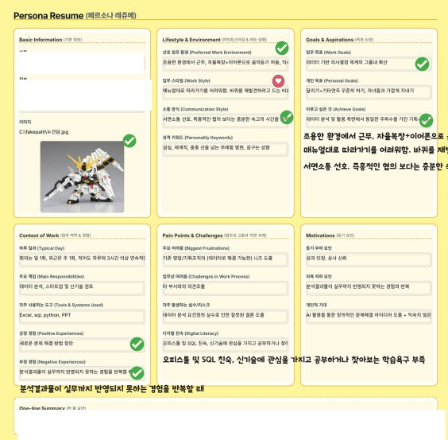
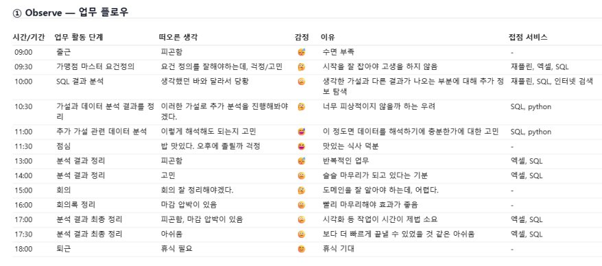
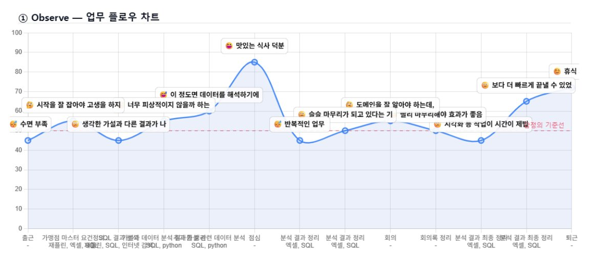
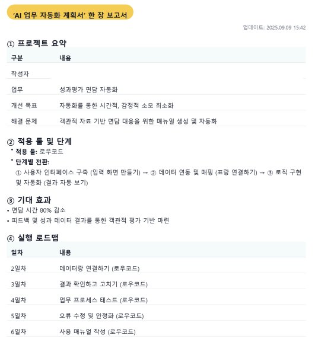

디자인씽킹 AI 워크숍
AI를 업무에 입히다
내 업무의 비효율을 진단하고, AI로 해결 도구까지 만들어 보는 핸즈온. '문제 정의–솔루션 설계–프로토타이핑'의 디자인씽킹 사이클을 압축적으로 경험합니다.
"AI를 써보고 싶은데, 내 업무 어디에 어떻게 적용해야 할지 막막해요"
업무 혁신의 필요성은 느끼지만 어디서부터 손대야 할지 막막한 분들을 위한 워크숍입니다.
- 디지털 전환으로 업무 혁신을 실현하고 싶은 모든 직급의 임직원
- 막연한 업무 고충을 데이터로 분석하고, 해결을 위한 AI 앱을 직접 제작하고 싶은 실무자
- 조직 내 페인포인트를 선제적으로 발굴해 디지털 솔루션으로 풀어내고자 하는 혁신 인재
혁신은 원하는데, 시작점을 모른다
"업무를 바꿔보자"는 의지는 있지만, 무엇부터 손대야 할지, 어떤 도구를 어떻게 써야 할지 막막합니다. 방법론 강의만 듣고 끝나면 정작 현장으로는 이어지지 않습니다.
반복 루틴이 생산성을 갉아먹는다
대부분의 직무에는 매일 비슷하게 되풀이되는 작업이 있습니다. "굳이 사람이 안 해도 되는데"라고 느끼면서도, 자동화할 방법을 찾지 못한 채 시간을 흘려보냅니다.
AI를 '내 업무'에 연결하지 못한다
AI 도구 이야기는 많이 들어봤지만, 정작 내 일에 어떻게 붙여야 할지 그림이 그려지지 않습니다. 남의 사례가 아니라, 내 업무 데이터로 직접 시작해보는 경험이 필요합니다.
'내 업무'를 재정의하는 5시간
DX 실전 역량 강화
디자인씽킹의 인간 중심 문제 해결 방법론과 생성형 AI를 결합해, 임직원이 스스로 업무 내 비효율을 진단하고 해결 도구를 직접 구현할 수 있도록 합니다.
혁신 프로세스 내재화
AI 도구 사용법을 익히는 데 그치지 않고, '문제 정의 → 솔루션 설계 → 프로토타이핑'으로 이어지는 혁신 사이클을 실제 직무에 적용할 수 있도록 지원합니다.
오늘의 경험이, 내일의 일하는 방식이 됩니다
데이터 기반 문제 정의 및 AI 솔루션 설계 역량 확보
막연한 업무 불만이 아닌, 실제 '루틴 데이터'를 분석해 페인포인트를 도출해봅니다. 병목 지점을 AI 솔루션으로 연결하며, 데이터에 기반한 논리적 의사결정 방식을 익힙니다.
노코드 기반 앱 구현 및 업무 자동화 기반 구축
개발 지식 없이 실제 작동하는 앱을 만들고 작동하는 경험을 해봅니다. 반복 업무 자동화 기반을 다지고, 핵심 가치 중심의 업무 환경을 조성합니다.
디자인씽킹 기반 혁신 마인드셋 내재화
공감–정의–아이디어–시제품–테스트로 이어지는 5단계를 경험하며 문제 해결 능력을 키웁니다. 동료 발표와 상호 피드백을 통해 지속적으로 개선해 나가는 애자일한 업무 태도를 체득합니다.
일하는 방식이 달라졌습니다
교육을 통해 도출한 자동화 사례를 직무군별로 정리했습니다.
수탁사 정기 보안점검의 자료 요청·취합·보고서 작성 자동화
- ① 프로세스 정의
- ② 동작 녹화·설정
- ③ 자동화 실행·테스트
데이터 취합·요약 시간 80% 이상 절감 · 수동 작업 데이터 오류 최소화 · 정형화된 보고서 자동 생성으로 업무 흐름 증대
기획 보고서의 데이터 수집 → 요약 → 초안 → 검수까지 한 사이클 자동화
- ① 데이터 수집 자동화 (뉴스·정책·사내 DB 크롤링)
- ② 핵심 요약 자동 생성 (AI 요약)
- ③ 보고서 템플릿 생성 (서론·본론·결론)
- ④ 보고서 템플릿 입력 (PPT/Word/Notion)
- ⑤ 자동화 실행·피드백 반영
자료 정리·요약 시간 70~80% 절감 · 최신 동향 반영의 신속성 강화 · 보고서 초안의 일관성·품질 향상 · 인적 검수 최소화로 리드타임 단축
고객 민원의 접수·등록·관계자 안내까지의 백오피스 자동화
- ① 현황 분석·요구사항 정의
- ② 시스템 연계 설계
- ③ 데이터 관리·표준화
- ④ 파일럿·예외 처리 프로세스 구축
업무 효율성 향상 · 고객 응대 품질 제고 · 리스크·컴플라이언스 관리
객관적 평가 자료를 매핑해 면담안을 자동 생성
- ① 사용자 인터페이스 구축 (입력 화면)
- ② 데이터 연동·매핑 (표 항목 연결)
- ③ 로직 구현·자동화 (결과 자동 보기)
면담 시간 80% 감소 · 피드백 및 성과 데이터를 통한 객관적 평가 기반 마련
9단계 자동화 워크플로 설계
- ① 스케줄 트리거 (Schedule by Zapier — 매일 오전 7시)
- ② 데이터 수집 (Notion DB 주간 보고서)
- ③ 데이터 가공 (Formatter — 변동 항목 ±10% 필터)
- ④ AI 요약 (OpenAI — 변동 항목별 요약)
- ⑤ 보고서 생성 (Google Docs/Sheets)
- ⑥ 이메일 발송 (Gmail — PDF 첨부)
- ⑦ 오류 핸들링 (Slack 알림)
- ⑧ 변동 강조·오류 시 알림
- ⑨ If-Then 조건부 규칙 (Zapier)
데이터 취합·요약 시간 80% 이상 절감 · 수동 작업 데이터 오류 최소화 · 정형화된 보고서 자동 생성



